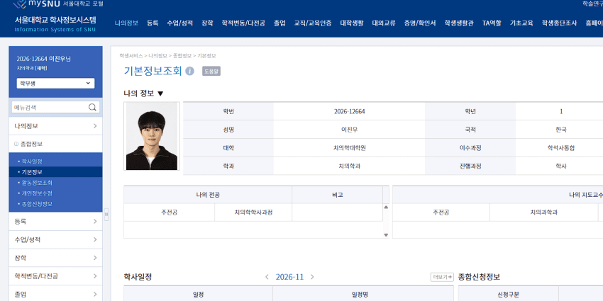

수능 국어 강사들도 쫄려서 못하는 게 실시간 인증인데 ㅋㅋㅋㅋㅋㅋㅋㅋㅋㅋ
지금 열1등감 덩어리 새끼들이 이진우 억까하니까 보여준다 해도
자신의 지능이 그들보다 훨씬 낮다는 현실을 믿을 수 없는 병신 장애련들 리트와 수능이 동떨어져 있다 ㅇㅈㄹ ㅋㅋㅋㅋㅋㅋㅋㅋㅋ
애초에 지금까지 리트 만점 안 나온 게 추논보단 언어이해의 영향이 크고, 언어이해는 수능 국어 독서 영역과 상당히 유사한데(심지어 리트에 문학도 나오기도 함)
좀 알고 씨부려라 ㅈㅂ
- dc official App
2027 수능 국어 실시간 Live로 풀이합니다.
시험자: 이진.우
일시: 11월 19일(목) 오전 08:40~12:20
방식: 8:40부터 대기하다가,
문제지가 업로드 되는 10:56에 시험지 인쇄 후
11:00부터 12:20까지 80분간 진행.
감독, 장소 섭외, 라이브 채널 등 공신력을 갖춘 세부시행계획은 16일(월)까지 확정하겠습니다.

댓글
수집 당시 댓글 258개
· ㅇㅇ · 11.12 18:05:18
· ㅇㅇ · 11.12 18:10:48
· ㅇㅇ · 11.12 18:15:56
· ㅇㅇ · 11.12 18:22:02
· ㅇㅇ · 11.12 18:49:06
ㅇㅇ · 11.12 18:02:40
· ㅇㅇ · 11.12 18:04:43
· ㅇㅇ · 11.12 18:05:42
· ㅇㅇ · 11.12 18:14:38
· ㅇㅇ · 11.12 18:28:08
ㅇ5ㅇ · 11.12 18:03:51
ㅇㅇ · 11.12 18:04:37
· ㅇㅇ · 11.12 18:07:14
· ㅇㅇ · 11.12 18:07:40
· ㅇㅇ · 11.12 18:29:16
· ㅇㅇ · 11.12 19:01:09
ㅇㅇ · 11.12 18:04:38
ㅇㅇ · 11.12 18:05:36
ㅇㅇ · 11.12 18:05:40
ㅇㅇ · 11.12 18:05:40
ㅇㅇ · 11.12 18:06:32
ㅇㅇ · 11.12 18:07:42
ㅇㅇ · 11.12 18:07:53
· ㅇㅇ · 11.12 18:11:15
· ㅇㅇ · 11.12 18:18:34
· ㅇㅇ · 11.12 18:25:30
· ㅇㅇ · 11.12 18:56:56
ㅇㅇ · 11.12 18:09:56
ㅇㅇ · 11.12 18:10:04
왤캐뿔났음
ㅇㅇ · 11.12 18:11:36
ㅇㅇ · 11.12 18:11:46
ㅇㅇ · 11.12 18:12:06
KORea · 11.12 18:12:13
ㅇㅇ · 11.12 18:12:19
ㅇㅇ · 11.12 18:12:57
루시퍼 대리자 · 11.12 18:13:48
루시퍼 대리자 · 11.12 18:13:56
7times · 11.12 18:14:17
ㅇㅇ · 11.12 18:14:25
ㅇㅇ · 11.12 18:14:39
· ㅇㅇ · 11.12 18:15:17
· ㅇㅇ · 11.12 18:16:00
· ㅇㅇ · 11.12 18:18:17
· ㅇㅇ · 11.12 18:19:44
· ㅇㅇ · 11.12 18:20:55
· ㅇㅇ · 11.12 18:39:56
· ㅇㅇ · 11.12 18:53:47
· ㅇㅇ · 11.12 19:20:15
· ㅇㅇ · 11.12 19:35:21
· ㅇㅇ · 11.12 19:36:02
· ㅇㅇ · 11.12 19:37:01
ㅇㅇ · 11.12 18:14:41
· ㅇㅇ · 11.12 18:15:00
예술이 · 11.12 18:16:14
ㅇㅇ · 11.12 18:16:36
ㅇㅇ · 11.12 18:17:58
· ㅇㅇ · 11.12 18:18:52
· ㅇㅇ · 11.12 18:19:04
ㅇㅇ · 11.12 18:19:12
ㅇㅇ · 11.12 18:19:13
· ㅇㅇ · 11.12 18:20:06
· sg-epk@jtk93.x29.jp · 11.12 19:18:30
ㅇㅇ · 11.12 18:19:20
· ㅇㅇ · 11.12 18:19:30
ㅇㅇ · 11.12 18:21:31
ㅇㅇ · 11.12 18:21:34
· ㅇㅇ · 11.12 18:31:40
ㅇㅇ · 11.12 18:21:58
라아 · 11.12 18:22:34
푸른반복 · 11.12 18:22:45
· 푸른반복 · 11.12 18:24:44
· ㅇㅇ · 11.12 18:27:48
· 푸른반복 · 11.12 18:33:14
· ㅇㅇ · 11.12 19:31:40
2456778 · 11.12 18:23:21
ㅇㅇ · 11.12 18:24:16
ㅇㅇ · 11.12 18:29:10
ㅇㅇ · 11.12 18:30:09
· ㅇㅇ · 11.12 18:31:42
· ㅇㅇ · 11.12 18:34:19
· ㅇㅇㅇ · 11.12 18:49:12
ㅇㅇ · 11.12 18:30:29
ㅇㅇ · 11.12 18:30:49
ㅇㅇ · 11.12 18:31:11
ㅁㄴㅇㄹ · 11.12 18:42:42
· ㅇㅇ · 11.12 18:51:10
· ㅂㅈㄷㅂㅈ · 11.12 18:56:18
ㅇㅇ · 11.12 18:55:51
ㅇㅇ · 11.12 18:59:43
ㅇㅇ · 11.12 19:05:07
ㅇㅇ · 11.12 19:06:28
ㅇㅇ · 11.12 19:06:34
ㅇㅇ · 11.12 19:11:07
ㅇㅇ · 11.12 19:12:50
ㅇㅇ · 11.12 19:22:38
· ㅇㅇ · 11.12 19:28:22
ㅇㅇ · 11.12 19:29:49
ㅇㅇ · 11.12 19:33:17
· ㅇㅇ · 11.12 19:35:25
ㅇㅇ · 11.12 19:36:58
· ㄴㄴ · 11.12 18:02:37
· ㅇㅇ · 11.12 18:03:14
· ㅇㅇ · 11.12 18:03:36
· ㅇㅇ · 11.12 18:03:42
· 금향 · 11.12 18:05:00
· 금향 · 11.12 18:05:29
· 금향 · 11.12 18:05:36
· ㅇㅇ · 11.12 18:06:33
· ㅇㅇ · 11.12 18:07:24
· ㅇㅇ · 11.12 18:10:01
· ㅇㅇ · 11.12 18:14:07
· ㅇㅇ · 11.12 18:23:14
· ㅇㅇ · 11.12 18:43:54
· 빠니보털 · 11.12 18:45:49
· ㅇㅇ · 11.12 19:10:41
엉엉엉햄스터쥬금 · 11.12 17:49:47
ㅇㅇ · 11.12 17:50:19
· ㅇㅇ · 11.12 17:56:16
· ㅇㅇ · 11.12 18:00:06
ㅇㅇ · 11.12 17:50:44
· ㅇㅇ · 11.12 17:52:00
· ㅇㅇ · 11.12 18:01:41
· ㅇㅇ · 11.12 18:05:55
· ㅇ.ㅇ · 11.12 18:12:48
· ㅇㅇ · 11.12 18:17:11
ㅇㅇ · 11.12 17:51:09
· ㅇㅇ · 11.12 18:18:32
ㅇㅇ · 11.12 17:51:19
ㅇㅇ · 11.12 17:51:22
삭제됨 · 11.12 17:51:46
· ㅋㅋ · 11.12 17:52:27
· ㅇㅇ · 11.12 17:53:08
ㅇㅇ · 11.12 17:51:46
ㅇㅇ · 11.12 17:52:03
· ㅇㅇ · 11.12 17:55:54
샨테 · 11.12 17:52:06
· 7times · 11.12 18:13:46
ㅇㅇ · 11.12 17:52:09
· ㅇㅇ · 11.12 18:16:25
ㅇㅇ · 11.12 17:52:40
ㅇㅇ · 11.12 17:52:49
· ㅇㅇ · 11.12 17:52:59
· ㅇㅇ · 11.12 17:53:05
· ㅇㅇ · 11.12 17:55:02
· ㅇㅇ · 11.12 17:56:13
· ㅇㅇ · 11.12 17:56:37
· ㅇㅇ · 11.12 18:05:59
루시퍼 대리자 · 11.12 17:53:09
ㅇㅇ · 11.12 17:54:18
· ㅇㅇ · 11.12 17:54:34
· ㅇㅇ · 11.12 18:04:36
· ㅇㅇ · 11.12 18:22:13
ㅇㅇ · 11.12 17:54:45
· ㅇㅇ · 11.12 17:55:22
· ㅇㅇ · 11.12 17:59:42
· ㅇㅇ · 11.12 18:11:23
· ㅇㅇ · 11.12 18:25:52
ㅇㅇ · 11.12 17:55:11
DC전사쿠루미쨩 · 11.12 17:55:40
ㅇㅇ · 11.12 17:55:45
ㅇㅇ · 11.12 17:55:57
· ㅇㅇ · 11.12 18:19:09
· ㅇㅇ · 11.12 18:24:58
· ㅇㅇ · 11.12 18:26:02
· ㅁㄴㅇ · 11.12 18:27:31
ㅇㅇ · 11.12 17:56:18
· ㅇㅇ · 11.12 17:58:35
· ㅇㅇ · 11.12 18:06:44
ㅇㅇ · 11.12 17:57:11
ㅇㅇ · 11.12 17:57:38
· ●Xiao● · 11.12 17:58:56
· ㅇㅇ · 11.12 18:06:18
· ㅇㅇ · 11.12 18:13:12
· ㅇㅇ · 11.12 18:22:54
ㅇㅇ · 11.12 17:58:28
ㅇㅇ · 11.12 17:58:52
ㅇㅇ · 11.12 17:58:56
ㅇㅇ · 11.12 17:59:01
ㅇㅇ · 11.12 17:59:13
· ㅋㅋ · 11.12 18:00:38
· ㅇㅇ · 11.12 18:07:34
ㅇㅇ · 11.12 17:59:29
· ㅇㅇ · 11.12 18:00:14
· ㅇㅇ · 11.12 18:54:15
ㅇㅇ · 11.12 18:00:14
· ㅇ.ㅇ · 11.12 18:03:14
· ㅇ.ㅇ · 11.12 18:16:31
· ㅇㅇ · 11.12 18:22:48
· ㅇㅇ · 11.12 18:29:47
· ㅇㅇ · 11.12 19:13:54
· ㅇㅇ · 11.12 19:19:44
· ㅇㅇ · 11.12 19:20:57
ㅇㅇ · 11.12 18:00:31
· ㅇㅇ · 11.12 18:05:07
ㅇㅇ · 11.12 18:01:08
ㅇㅇ · 11.12 18:01:38
ㅇㅇ · 11.12 18:01:53
· ㅇㅇ · 11.12 18:02:41
· ㅇㅇ · 11.12 18:03:14
· ㅇㅇ · 11.12 18:04:17
ㅇㅇ · 11.12 16:55:30
· ㅇㅇ · 11.12 18:01:17
세뽕이1 · 11.12 16:56:30
· 세뽕이2 · 11.12 16:57:02
· 세뽕이2 · 11.12 16:57:40
· 세뽕이1 · 11.12 16:58:01
· ㅇㅇ · 11.12 16:59:28
· ㅇㅇ · 11.12 16:59:39
· 세뽕이2 · 11.12 17:05:09
· 세뽕이5 · 11.12 17:25:40
· 세뽕이2 · 11.12 17:27:46
· ㅇㅇ · 11.12 17:51:47
· ㅇㅇ · 11.12 17:52:14
· ㅇㅇ · 11.12 17:54:11
· ㅇㅇ · 11.12 17:54:45
· ㅇㅇ · 11.12 19:08:01
세뽕이2 · 11.12 16:56:36
· 비선실세 · 11.12 16:57:24
· 세뽕이2 · 11.12 16:58:24
ㅇㅇ · 11.12 16:58:04
· 세뽕이3 · 11.12 17:00:38
· ㅇㅇ · 11.12 17:04:08
· 세뽕이4 · 11.12 17:06:57
· 세뽕이2 · 11.12 17:07:18
· 세뽕이2 · 11.12 17:08:17
· ㅇㅇ · 11.12 17:19:19
· ㅇㅇ · 11.12 17:29:25
· ㅇㅇ · 11.12 17:47:29
· ㅇㅇ · 11.12 17:52:08
· ㅇㅇ · 11.12 17:56:20
땨뗘(봇) · 11.12 17:46:04
헌트 · 11.12 17:46:56
ㅇㅇ · 11.12 17:47:02
ㅇㅇ · 11.12 17:47:07
●Xiao● · 11.12 17:48:42
Adriel · 11.12 17:48:58
ㅇㅇ · 11.12 17:49:01
· ㅇㅇ · 11.12 17:50:02
· index · 11.12 17:50:59
· ㅇㅇ · 11.12 18:02:12
· ㅇㅇ · 11.12 18:04:42
ㅇㅇ · 11.12 17:49:26
· ㅇㅇ · 11.12 17:49:43
· ㅋㅋ · 11.12 17:50:35
· ㅇㅇ · 11.12 17:55:02
· ㅇㅇ · 11.12 17:55:03
· ㄴㄴ · 11.12 17:55:10
· ㅇㅇ · 11.12 17:55:37
· ㅇㅇ · 11.12 17:55:56
· ㄴㄴ · 11.12 17:57:20
· ㅇㅇ · 11.12 17:58:38
· ㄴㄴ · 11.12 17:59:28
· ㅇㅇ · 11.12 18:00:30
· ㄴㄴ · 11.12 18:00:36
· ㅇㅇ · 11.12 18:00:56
· ㅇㅇ · 11.12 18:00:58
· ㄴㄴ · 11.12 18:01:05
· ㅇㅇ · 11.12 18:01:32